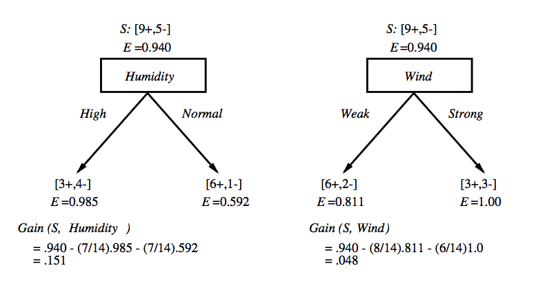
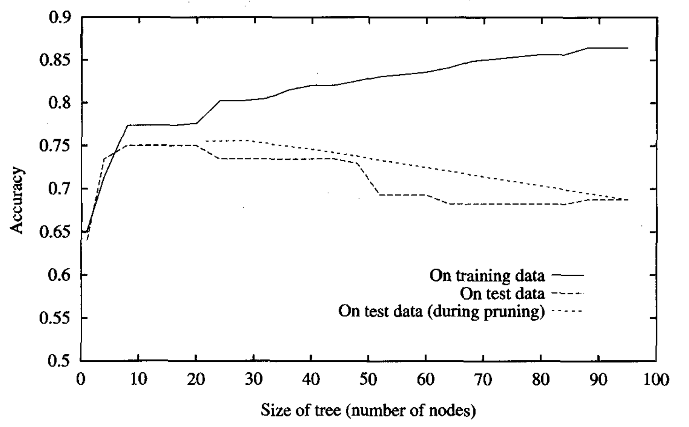

Introduction to Machine Learning and Data Mining
Kyle I S Harrington / kyle@eecs.tufts.edu
Some slides adapted from Mitchell Decision Trees slides
Marvin Minsky
Passed on January 24
A founder of Artificial Intelligence
Also invented (confocal) microscopes!
Notorious for causing the "neural network winter"
Who Likes Tennis?
|
Class: Play tennis? Attributes:
|
Decision Trees

Representation of a Decision Tree
Nodes are attributes
Branches are values of attributes
Leafs are classes
When to Use a Decision Tree?
Discrete attribute-values (although continuous-value implementations work as well)
Discrete outputs
It is OK to have noise in training data
It is OK to have missing values
Decision Trees
- Choose the best attribute, $A$, for the next node
- Create a node for $A$
- Create branches for each possible value of $A$
- Sort all observations into leaves
- If all observations are perfectly classified,
then stop,
else recur.
How do we choose the best attribute?
Choosing an Attribute

Which is better A1 or A2?
Entropy
Entropy describes how unpredictable information is.
 |
|
Entropy
$Entropy(S)$ is the expected number of bits needed to encode a class of a randomly drawn member of the sample set (under the optimal, shortest-length code)
An optimal length code uses $-log_2 p$ bits to encode a message of probability p
i.e. if $p=0.01$, then the optimal code length is $6.64$
and if $p=0.99$, then the optimal code length is $0.01$
Entropy
Recall that our sample set $S$ has $p_\oplus$ and $p_\ominus$ proportions of $\oplus$ and $\ominus$ classes
Hence, to encode a random member of $S$, weigh the probability of drawing a member of the class by the optimal length code of the class:
$p_\oplus (-log_2 p_\oplus) + p_\ominus ( -log_2 p_\ominus )$
$Entropy(S) \equiv -p_\oplus log_2 p_\oplus - p_\ominus log_2 p_\ominus$
Choosing an Attribute
How can we use entropy in this decision?
Information Gain
$Gain(S,A)$ is the expected reduction in entropy by sorting on attribute $A$
$Gain(S,A) \equiv Entropy(S) - \displaystyle \sum_{v \in Values(A)} \frac{|S_v|}{|S|} Entropy(S_v)$
Information Gain Example
Building a Tree Example
|

|
Building a Tree Example
|

|
Searching Hypothesis Space with ID3

Properties of ID3
For any given training set
Is it always possible to build a tree?
If so, will it be a good tree?
Properties of ID3
Only 1 hypothesis (decision tree)
If an early split goes wrong, we're stuck with it!
Uses class statistics, robust to noise
Inductive bias of ID3: tends to prefer shorter trees
Inductive Bias of ID3
Favors shorter trees/more information gain closer to the root
The bias arises from the search, not the search space
Occam's razor: the simplest hypothesis that fits is the best one
Overfitting
Let's describe the error of a hypothesis $h$ as $error(h)$
Now consider specific error measurements:
- training set, $S$: $error_S(h)$
- full dataset, $D$: $error_D(h)$
Overfitting
Hypothesis $h$ overfits if:
$error_S(h) < error_S(h')$
and
$error_D(h) > error_D(h')$
Overfitting

Causes of overfitting
Not enough examples on some attributes
Noisy data
Preventing Overfitting
Stop growing when a new split isn't statistically significant
Grow and prune post-hoc
Reduced-error pruning
- Build a tree as usual, potentially overfitting
- Use a validation dataset
- Greedily remove nodes that improve the accuracy on the validation data
Limitations?
Reduced-error pruning
Handling Continuous Values

Make it discrete!
$(Temperature > \frac{( 48 + 60 )}{2} )$
Consider each boundary (i.e. $\frac{a+b}{2}$)
Use information gain to choose node as usual
Handling Missing Values
Some observations may not have values for all attributes
That's OK, we'll use it anyway
Multiple options:
- When we get to the relevant node, $N$, assign the most common value of $A$ at $N$
- Assign most common value of $A$ at $N$ that maps to class $C$
- Use probabilities based on distribution of $A$ at $N$
Assignment 2 is not required, just bonus
Posted in the assignments section
Due: Feb 03
What do you get? +10% on the first quiz
What Next?
For additional reading see Chapter 3 of Mitchell
Naive Bayes (you may want to skim some of the probability tutorials)